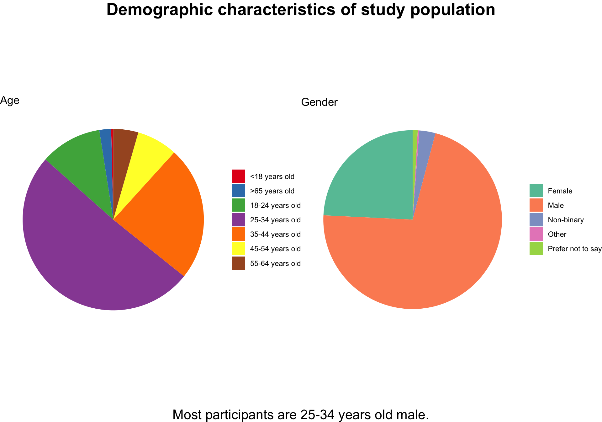

# library
library(tidyverse)
# library(ggplot2)
# library(dplyr)
# library(tidyr)
library(gridExtra)
library(grid)
library(RColorBrewer)
# Load the data
tuesdata <- tidytuesdayR::tt_load('2024-05-14')
data <- tuesdata[["coffee_survey"]]
# only focus on the following variables
df <- data %>%
select(age, starts_with("coffee_a_"), starts_with("coffee_b_"),
starts_with("coffee_c_"),starts_with("coffee_d_"), gender)
df <- df %>% select(-ends_with("notes"))
# remove all rows with NA values
df <- na.omit(df)
df$gender[df$gender == "Other (please specify)"] <- "Other"Example Analysis
Introduction
Background
In October 2023, James Hoffmann, a “world champion barista,” and the coffee company Cometeer hosted the “Great American Coffee Taste Test” on YouTube (Hoffmann 2024). Participants tasted four different types of coffee ordered from Cometeer and completed a survey that gathered demographic information, their coffee preferences and the ratings for the four coffee. Using the survey data collected during the taste test, This analysis aims to investigate the association between demographic factors and participants’ coffee preferences.
Research Question
Is there an association between age and gender and individuals’ coffee preferences?
Intended Audience
This analysis is aimed at coffee enthusiasts, industry stakeholders, and data science students.
Data Source and data dictionary
The dataset used in this analysis is part of the TidyTuesday initiative (Harmon 2019) and can be accessed on the TidyTuesday GitHub. The original data could be accessed on James Hoffmann’s YouTube channel. The data dictionary could be found here.
Exploratory Data Analysis
Due to the presence of missing data in the survey, we selected only the variables relevant to the subsequent analysis, which include age, gender, and the ratings for each type of coffee. Rows with NA values in these selected columns were removed, resulting in a total of 3,520 observations remaining for analysis.
The R packages used in the following analysis include Tidyverse (Wickham et al. 2019), gridExtra (Auguie 2017), grid (R Core Team 2023) and RColorBrewer (Neuwirth 2022).
Although only age and gender are included in the following analysis, the survey also collected additional demographic information, including education level, ethnicity, employment status, number of children, and political affiliation.
Demographic characteristics of the study population
# List of columns for pie charts
cols <- c("age", "gender")
title_labels <- list("age" = "Age",
"gender" = "Gender")
# List of colors of the pie chart
palettes <- list(
age = "Set1",
gender = "Set2")
# Create an empty list to store the plots
plot_list <- list()
# Loop through each column and create a pie chart
for (col in cols) {
# Calculate frequencies
data_summary <- df %>%
count(!!sym(col)) %>%
mutate(perc = n / sum(n) * 100) # Calculate percentages
# Create pie chart
plot <- ggplot(data_summary, aes(x = "", y = perc, fill = !!sym(col))) +
geom_bar(stat = "identity", width = 1) +
coord_polar("y") +
labs(title = paste(title_labels[[col]]), y = NULL, x = NULL) +
theme_void() +
scale_fill_brewer(palette = palettes[[col]]) +
theme(legend.title = element_blank()) +
guides(fill = guide_legend(title = col))
plot_list[[col]] <- plot
}
# Arrange the plots in a 2x2 grid (2 rows, 2 columns)
grid.arrange(
arrangeGrob(plot_list$age, plot_list$gender, nrow = 1),
top = textGrob("Demographic characteristics of study population", gp = gpar(fontsize = 16, fontface = "bold")),
bottom = textGrob("Most participants are 25-34 years old male.", gp = gpar(fontsize = 10))
)
The study population predominantly consists of young males. Given that the survey was conducted on YouTube, it is reasonable to infer that the majority of participants are younger individuals.
Note
This demographic distribution is not representative of the overall American population, likely due to the sampling method employed in the study. Consequently, the results may not be generalizable to other populations.
Overview of coffee ratings
# Gather the data into long format for bitterness, acidity, and personal preference
df_long <- df %>%
pivot_longer(cols = starts_with("coffee_"),
names_to = c("coffee_type", "attribute"),
names_pattern = "coffee_([a-d])_(.*)") %>%
mutate(coffee_type = paste("Coffee", toupper(coffee_type)))
# Define a more distinguishable color palette for each coffee type
coffee_colors <- c("Coffee A" = "#FF9999", "Coffee B" = "#66B2FF",
"Coffee C" = "#99FF99", "Coffee D" = "#FFCC99")
# List of attributes to plot
attributes <- c("bitterness", "acidity", "personal_preference")
# Create an empty list to store the plots
plot_list <- list()
# Custom x-axis labels mapping
x_axis_labels <- c("bitterness" = "Bitterness",
"acidity" = "Acidity",
"personal_preference" = "Personal Preference")
# Loop through each attribute to create a frequency polygon
for (attr in attributes) {
# Filter data for the current attribute
data_attr <- df_long %>% filter(attribute == attr)
# Create frequency polygon with different colors for each coffee type
polygon_plot <- ggplot(data_attr, aes(x = value, color = coffee_type, fill = coffee_type)) +
geom_freqpoly(binwidth = 1, size = 1.2) +
xlim(c(1,5)) +
scale_color_manual(values = coffee_colors) +
labs(title = paste(x_axis_labels[attr]),
x = x_axis_labels[attr], y = "Frequency") +
guides(color = guide_legend(title = "Coffee type")) + # Custom legend title
theme_classic()
# Append the plot to the list
plot_list[[attr]] <- polygon_plot
}
grid.arrange(
arrangeGrob(plot_list$bitterness, plot_list$acidity,
plot_list$personal_preference, nrow = 2),
top = textGrob("Ratings of bitterness, acidity and personal preferences", gp = gpar(fontsize = 20, fontface = "bold")),
bottom = textGrob("Colors represent difference coffee type", gp = gpar(fontsize = 16))
)Since the participant were asked to rate the coffee on a scale of 1-5, the ratings are considered as discrete variable. Therefore, a frequency polygon plot was used instead of a density plot to better represent the data and enhance aesthetics.
On a scale of 1 to 5, most participants rated coffee B and C with a score of 3 for bitterness, while coffee A and D were perceived as less bitter. Coffee A and D also exhibited higher acidity levels compared to coffee B and C. Overall, coffee D was the most preferred among participants, followed closely by coffee A, with a comparable number of individuals favoring coffee B and C.
Interestingly, the distributions of bitterness and acidity scores for coffee A and D are highly similar, as are those for coffee B and C. While the overall preference distributions for coffee B and C are alike, a greater number of participants rated coffee D as tasting better than coffee A.
Note
Coffee A is a light roasted single-estate coffee, coffee B is a medium roast blend, coffee C is a dark roast blend, and coffee D is a light roasted single-estate coffee with some fermented flavors, as stated by the coffee company. These results may indicate that participants struggled to differentiate between the medium roast (coffee B) and dark roast (coffee C) in terms of bitterness and acidity. Although the bitterness and acidity levels of coffee A and coffee D are also similar, survey participants expressed a greater preference for coffee D.
Is there an association between age and coffee preference?
# Filter data for only 'personal preference' ratings
df_preference <- df_long %>%
filter(attribute == "personal_preference") %>%
# Convert 'age' to a factor with a specific order
mutate(age = factor(age, levels = c("<18 years old", "18-24 years old",
"25-34 years old", "35-44 years old",
"45-54 years old", "55-64 years old",
">65 years old")))
# Create a box plot with rotated x-axis labels
ggplot(df_preference, aes(x = age, y = value, fill = coffee_type)) +
geom_boxplot() +
facet_wrap(~ coffee_type, ncol = 2) + # Create a separate box plot for each coffee type
labs(title = "Coffee Preference by Age Group Across Coffee Types",
subtitle = "Examining if age are associated with personal preference for different coffee types",
x = "Age",
y = "Personal Preference Rating",
fill = "Coffee Type") +
theme_minimal() +
theme(legend.position = "none",
axis.text.x = element_text(angle = 45, hjust = 1))Personal preference ratings for coffee vary slightly across different age groups, with the degree of variation dependent on the type of coffee. For instance, the distribution of preference ratings for coffee A among the age groups 18-24, 45-54, 55-64, and those over 65 is quite similar, with a median rating of 3. In these groups, there is an approximately equal number of individuals who enjoy or dislike the coffee. In contrast, the age groups under 18, as well as 25-34 and 35-44, have a median rating of 4, although the under-18 group exhibits a larger variance in ratings compared to the other two age groups.
In comparison, the median ratings for coffee B and C are consistent across all age groups. For coffee D, all age groups below 55 report a median rating of 4. However, older participants tend to have a lower preference, with the 45-54 age group giving a median rating of 3, while those in the 55-64 and over 65 age groups assign a median rating of 2.
Warning
Since the ratings are discrete variables with only five possible values, there is a higher chance that the median ratings may be the same across different groups. To gain a clearer understanding of whether preference ratings differ among various age groups, we also calculated the average ratings.
# Calculate the average rating of personal preference for each age group and coffee type
average_ratings <- df_preference %>%
group_by(age, coffee_type) %>%
summarize(avg_preference = mean(value, na.rm = TRUE)) %>%
ungroup()
# Prepare the average ratings data in the desired wide format
average_ratings_wide <- average_ratings %>%
mutate(avg_preference = round(avg_preference, 1)) %>% # Round to 1 decimal
pivot_wider(names_from = age, values_from = avg_preference)
# Display the table using knitr::kable() and kableExtra for styling
average_ratings_wide %>%
knitr::kable(col.names = c("Age group", "<18", "18-24", "25-34", "35-44",
"45-54", "55-64", ">65"))| Age group | <18 | 18-24 | 25-34 | 35-44 | 45-54 | 55-64 | >65 |
|---|---|---|---|---|---|---|---|
| Coffee A | 3.1 | 3.2 | 3.4 | 3.3 | 3.2 | 2.9 | 3.3 |
| Coffee B | 2.6 | 3.2 | 3.0 | 3.1 | 3.3 | 3.3 | 3.3 |
| Coffee C | 2.9 | 3.1 | 3.0 | 3.1 | 3.2 | 3.4 | 3.2 |
| Coffee D | 3.1 | 3.4 | 3.6 | 3.4 | 2.9 | 2.5 | 2.3 |
Table 1: Average coffee preference rating by coffee type and age group
The results from the average preference ratings are consistent with the median ratings. For all coffee types, the average preference rating is approximately 3 across most age groups, with some exceptions: individuals over 55 tend to rate coffee D lower, while those under 18 tend to rate coffee B lower.
Is there an association between gender and coffee preference?
# Prepare the data by calculating the average ratings and using the correct coffee type order
df_preference_avg <- df_long %>%
filter(attribute == "personal_preference") %>%
group_by(gender, coffee_type) %>%
summarize(avg_preference = mean(value, na.rm = TRUE))
# Reorder the coffee types
df_preference_avg$coffee_type <- factor(df_preference_avg$coffee_type,
levels = c("Coffee D", "Coffee C",
"Coffee B", "Coffee A"))
# Create the heatmap plot
ggplot(df_preference_avg, aes(x = gender, y = coffee_type, fill = avg_preference)) +
geom_tile() +
scale_fill_distiller(palette = "RdYlBu", direction = -1, limits = c(2, 4), name = "Avg. Preference Rating") + # Color gradient
labs(title = "Average Coffee Preference by Gender and Coffee Type",
subtitle = "Exploring the relationship between gender and coffee preference across different coffee types",
x = "Gender",
y = "Coffee Type") +
theme_minimal() +
theme(axis.text.x = element_text(angle = 45, hjust = 1))The average preference ratings differ slightly across gender categories for each type of coffee. Most gender groups exhibit a neutral preference for each coffee type, reflected in an average preference rating of 3, indicated in yellow. However, males tend to assign higher ratings to coffee A, while those who identified as “other” or “prefer not to say” generally rate coffee B and C lower. For coffee D, females tend to provide lower preference ratings, whereas the remaining participants tend to assign higher ratings.
Summary
This analysis examined the relationships between demographic factors—specifically age and gender—and coffee preferences based on a survey conducted during the “Great American Coffee Taste Test.” The results indicate that there is no strong association between age or gender and coffee preferences, except for coffee D, where younger participants and those identifying as male, as well as those choosing “other” or “prefer not to answer,” tend to assign relatively higher preference ratings, contributing to a higher overall rating for this coffee. The average and median preference ratings for the four coffees across age and gender groups were close to 3, suggesting a neutral preference and an equal distribution of high and low ratings among participants in each demographic group. However, the study population is not representative of the broader U.S. population, which limits the generalizability of the findings. Future research could employ statistical models, such as linear regression, to quantify the associations between various demographic factors and coffee preferences and assess their statistical significance.
Fuctions
dplyr: select, ends_with, starts_with, mutate, filter
tidyr: pivot_wider, pivot_longer
ggplot: geom_bar, geom_freqpoly, geom_boxplot
References
Auguie, Baptiste. 2017. gridExtra: Miscellaneous Functions for "Grid" Graphics. https://CRAN.R-project.org/package=gridExtra.
Harmon, Jon. 2019. “Tidy Tuesday.” www.tidytuesday.com/.
Hoffmann, James. 2024. “Surprising and Fascinating Results from the Taste Test.” https://www.youtube.com/watch?v=bMOOQfeloH0.
Neuwirth, Erich. 2022. RColorBrewer: ColorBrewer Palettes. https://CRAN.R-project.org/package=RColorBrewer.
R Core Team. 2023. R: A Language and Environment for Statistical Computing. Vienna, Austria: R Foundation for Statistical Computing. https://www.R-project.org/.
Wickham, Hadley, Mara Averick, Jennifer Bryan, Winston Chang, Lucy D’Agostino McGowan, Romain François, Garrett Grolemund, et al. 2019. “Welcome to the tidyverse.” Journal of Open Source Software 4 (43): 1686. https://doi.org/10.21105/joss.01686.